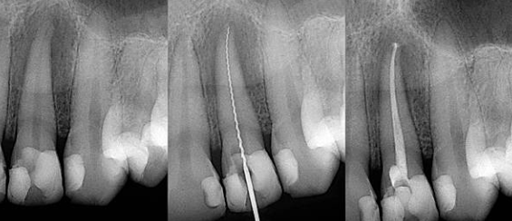

Especialidades

Gracias a los sistemas rotativos automatizados, el tratamiento de conducto es hoy un procedimiento mucho más rápido y preciso. Esta tecnología permite una limpieza profunda de los conductos infectados en una sola sesión, eliminando el dolor agudo y salvando la pieza dental.
¿Siente dolor o sensibilidad aguda? Estamos para ayudarle.
Urgencias por WhatsApp